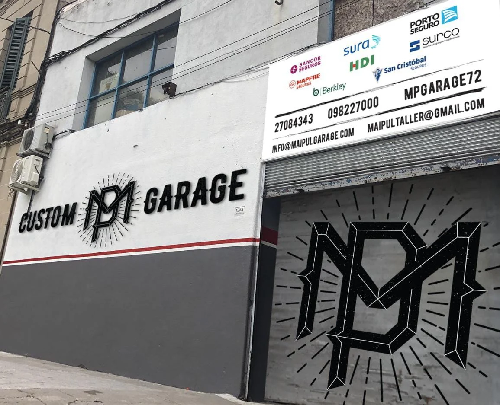

Taller Mecanico MP - Mantenimiento Preventivo
En MP, nos especializamos en ofrecer servicios de mantenimiento preventivo para vehículos. Nuestro objetivo es garantizar que tu automóvil funcione de manera óptima y segura, prolongando su vida útil y evitando costosas reparaciones a largo plazo. Contamos con un equipo de técnicos altamente capacitados y utilizamos herramientas de última generación para realizar inspecciones exhaustivas y servicios de mantenimiento de alta calidad. Confía en nosotros para mantener tu vehículo en las mejores condiciones posibles.
